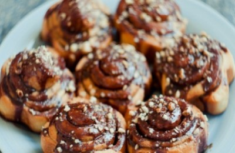

клубничный чизкейк
булочки
печенье
Булочки - небольшие хлебцы как правило круглой или овальной формы. Этот вид выпечки очень популярен - вкусные булочки все любят с детства: сдобные булочки, сладкие булочки, булочки с маком, с изюмом, с корицей, с повидлом, с кунжутом, с сыром; французские булочки, венские булочки, домашние булочки... Если вы ищите рецепты домашних булочек, рецепты булочек с фото - на нашем сайте рецепты булочек к вашим услугам!
 вот рецепт
шоколад, корица, орехи, глазурь, сироп ит т.д.